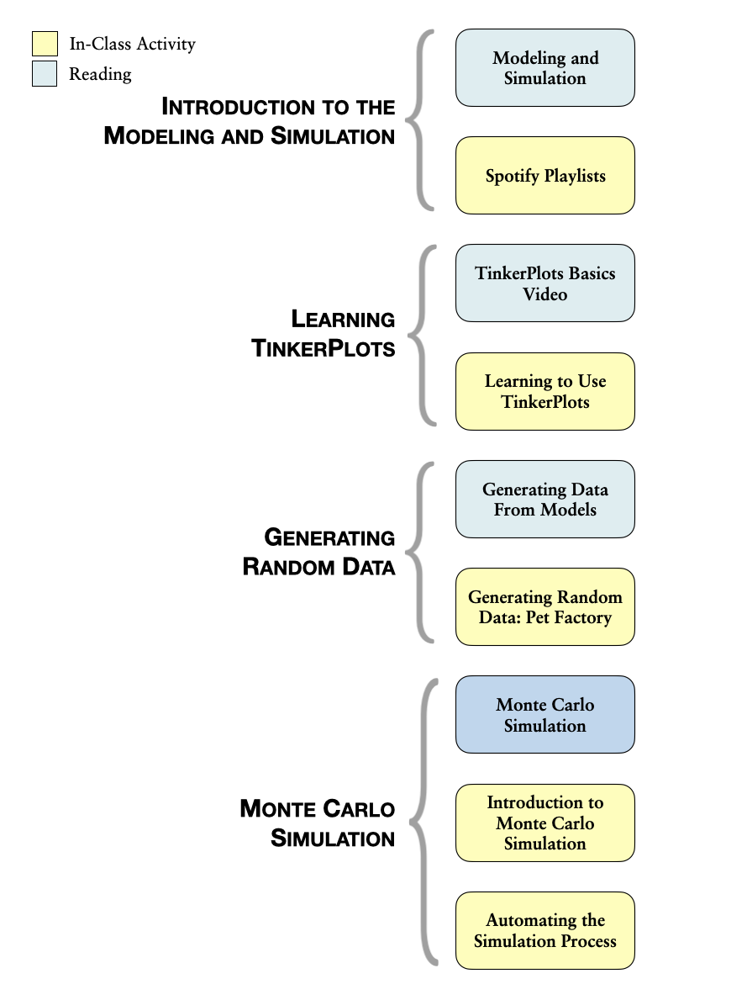

Modeling & Simulation
There is mounting evidence that the “model-building era”" that dominated the theoretical activities of the sciences for a long time is about to be succeeded or at least lastingly supplemented by the “simulation era”.2
Modeling is one of the most important topics you may ever learn. It is used in microbiology, macroeconomics, urban studies, sociology, psychology, public health, computer science, and of course, statistics. In fact, modeling is a method that is used in almost every discipline. Many think that it is an important skill to learn because it is so pervasive. While this is true, even more important is how closely the skills of modeling tie to the more general skills of problem solving. Starfield, Smith, and Bleloch (1994) summed this sentiment up nicely when they wrote, “learning to model is bound up with learning to solve problems and to think imaginatively and purposefully” (p. x).3
A model is a simplified representation of a system that can be used to promote an understanding of a more complex system. For example, meteorologists use computers to build models of the climate to understand and predict the weather. The computer model includes behaviors or properties which correspond, in some way, to the particular real-world system of climate. The computer models, however, do not include every possible detail about climate. All models leave things out and get some things—many things—wrong. This is because all models are simplifications of reality. Since all models are simplifications of reality there is always a trade-off as to what level of detail is included in the model. If too little detail is included in the model one runs the risk of missing relevant interactions and the resultant model does not promote understanding. If too much detail is included in the model, the model may become overly complicated and actually preclude the development of understanding.
Models have many purposes, but are primarily used to better understand phenomena in the real-world. Common uses of models are for description, exploration, prediction, and classification. For example, Google builds models to understand and predict peoples’ internet searching tendencies. These models are then used to help Google carry out more efficient and better searches of information. As another example, Netflix builds models to understand the characteristics of movies that their customers have rated highly so that they can then recommend other movies that the person may enjoy. Amazon and Apple iTunes both use models in similar manners.
Outline and Goals of Unit 1
The following schematic outlines the course readings, in-class activities, and assignments for Unit 1.

In this unit, you will begin by exploring ideas of randomness. Randomness permeates, and is, in fact, fundamental to statistics. Then, you will learn how to use TinkerPlots™ to model several random processes and generate outcomes from those models. By generating data from different models, you will gain experience in considering the variation in outcomes that is produced by these random processes. This consideration will help you understand and overcome many misleading human intuitions about randomness.
You will also be introduced to the Monte Carlo simulation process and learn how to carry out a Monte Carlo simulation using TinkerPlots™. This process allows you to quickly generate multiple data sets from a model in order to carry out hypothetical experiments. For example, we could ask the question: How likely is it to rain three out of the five days on my vacation given a particular forecast? By modeling the forecast and repeatedly generating data for the five days of vacation, we can then answer this question.
As you progress through the unit, remember that the modeling process is a creative process that can often be very challenging. At times, this might lead to frustration as you are learning and practicing some of the material. But, as Mosteller et al. (1973) remind us, it is also a profitable experience since, “modeling is not only a technique of statistics…it is a method of study which can be applied in many other fields as well” (p. xii).4
Randomness
One critical component of simulation is the random process used to generate data. To help you begin to understand randomness, watch the Random Sequences: Human vs. Coin YouTube video.
Hartmann, S. (2005). The world as a process: Simulations in the natural and social sciences. http://philsci-archive.pitt.edu/2412/↩
Starfield, A. M., Smith, K. A., & Bleloch, A. L. (1994). How to model it: Problem solving for the computer age. Edina, MN: Burgess International Group, Inc.↩
Mosteller, F., Kruskal, W. H., Link, R. F., Pieters, R. S., & Rising, G. R. (1973). Statistics by example: Finding models. Reading, MA: Addison–Wesley.↩